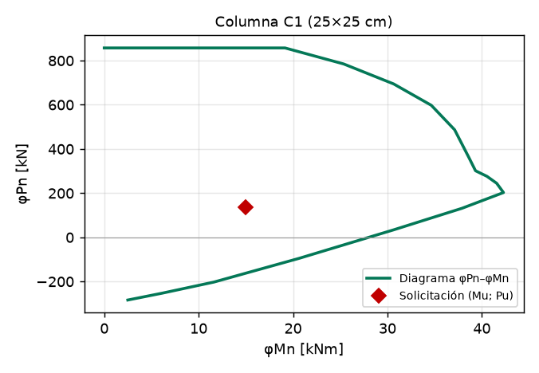
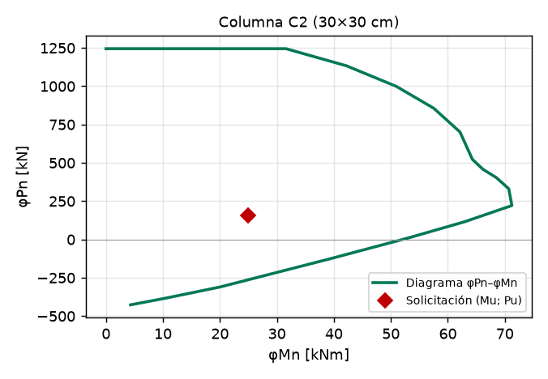
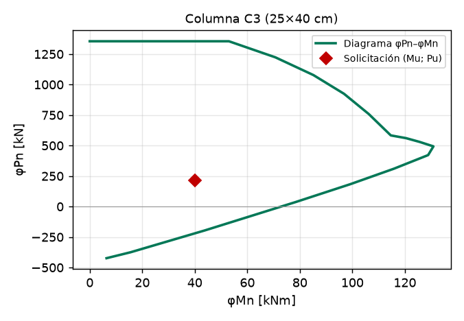

| ENFOQUE INGENIERÍA | MEMORIA DE CÁLCULO | CÓDIGO [código] |
| REVISIÓN 00 | ||
| ESTRUCTURAS | 23/10/2026 | |
El presente informe presenta la memoria de cálculo estructural de Vivienda unifamiliar – EJEMPLO (reemplazar) (Mendoza – Capital), elaborada a partir de la Planilla Unificada de Cálculo Estructural. Se verifican losas, vigas, columnas, acción sísmica, muros resistentes y fundaciones conforme a los reglamentos CIRSOC 101, CIRSOC 201 e INPRES-CIRSOC 103.
| Dato | Valor |
|---|---|
| Obra | Vivienda unifamiliar – EJEMPLO (reemplazar) |
| Ubicación | Mendoza – Capital |
| Hormigón | H-25 – f'c = 25 MPa – Ec = 23.500 MPa |
| Acero longitudinal / estribos | ADN 420 (fy = 420 MPa) / ADN 420 (fyt = 420 MPa) |
| Peso unitario H°A° | 25,00 kN/m³ |
| Recubrimientos libres (vigas y columnas / losas / fundaciones) | 40 / 20 / 70 mm |
| Tensión admisible del suelo / profundidad de fundación | 150 kPa / 1,00 m |
| Mampostería | Ladrillos cerámicos macizos, mortero N: f'm = 1,75 MPa, f'v = 0,190 MPa, Em = 2.100 MPa |
Nivel TECHO – capas de carga permanente [kN/m²]:
| Material | q [kN/m²] |
|---|---|
| Cubierta impermeabilizante con base de tela o cartón asfáltico de siete capas | 0,10 |
| Contrapiso de cemento, arena y cascote | 1,44 |
| Mortero de cemento pórtland y arena | 0,42 |
| Yeso con metal desplegado | 0,18 |
| Carga permanente D (sin peso propio de la losa) | 2,14 |
Nivel ENTREPISO – capas de carga permanente [kN/m²]:
| Material | q [kN/m²] |
|---|---|
| Baldosa cerámica, 12 mm de espesor | 0,28 |
| Contrapiso de cemento, arena y cascote | 1,44 |
| Mortero de cemento pórtland y arena | 0,42 |
| Yeso con metal desplegado | 0,18 |
| Carga permanente D (sin peso propio de la losa) | 2,32 |
Sobrecargas: techo Lr = 1,00 kN/m² (Azoteas y terrazas inaccesibles); entrepiso L = 2,00 kN/m² (Usos Residenciales (casa habitación, departamentos): viviendas para 1 ). Factor de L en combinaciones: 0,50.
Combinaciones de carga (CIRSOC 201 §9.2), con espesor de losa estimado h = 12 cm [kN/m²]:
| Combinación | TECHO | ENTREPISO |
|---|---|---|
| D' = D + γH°A°·h_est | 5,14 | 5,32 |
| U1 = 1,4·D' | 7,20 | 7,45 |
| U2 = 1,2·D' + 1,6·L + 0,5·Lr | 6,67 | 9,58 |
| U3 = 1,2·D' + 1,6·Lr + fL·L | 7,77 | 7,38 |
| qu = máx(U1; U2; U3) | 7,77 | 9,58 |
| Servicio D' + L + Lr | 6,14 | 7,32 |
Franja de 1 m. Mu en kNm/m, Vu en kN/m, h en cm. qu incluye el peso propio de la losa.
| Losa | Nivel | Esquema | L [m] | h [cm] | h mín [cm] | qu [kN/m²] | Mu(+) | Mu(−) | Vu | Altura |
|---|---|---|---|---|---|---|---|---|---|---|
| L1 | Techo | Simplemente apoyada | 3,00 | 15 | 15,0 | 8,67 | 9,75 | 0,00 | 13,00 | CUMPLE |
| L2 | Entrepiso | Continua 2 tramos | 3,20 | 14 | 13,3 | 10,18 | 9,48 | 11,59 | 18,74 | CUMPLE |
| L3 | Techo | Voladizo | 1,20 | 12 | 12,0 | 7,77 | 0,00 | 5,59 | 9,32 | CUMPLE |
Armadura (As en cm²/m):
| Losa | d [cm] | As req. (+) | Adopt. (+) | φMn | Tramo | As req. (−) | Adopt. (−) | Apoyo | Corte | Reparto |
|---|---|---|---|---|---|---|---|---|---|---|
| L1 | 12,5 | 2,10 | φ10 c/15,0 | 23,72 | CUMPLE | – | – | – | CUMPLE | CUMPLE |
| L2 | 11,5 | 2,22 | φ10 c/15,0 | 21,74 | CUMPLE | 2,73 | φ10 c/15,0 | CUMPLE | CUMPLE | CUMPLE |
| L3 | 10,0 | 0,00 | – | – | – | 1,58 | φ10 c/15,0 | CUMPLE | CUMPLE | CUMPLE |
Viguetas pretensadas (cargas de servicio, momento admisible de catálogo):
| Vigueta | Nivel | Serie | L [m] | Sep. [m] | q [kN/m²] | M [kNm] | M adm [kNm] | Verificación |
|---|---|---|---|---|---|---|---|---|
| VP1 | Entrepiso | Serie 3a | 4,00 | 0,70 | 6,82 | 9,55 | 11,92 | CUMPLE |
| VP2 | Techo | Serie 2a | 3,50 | 0,70 | 5,64 | 6,05 | 10,89 | CUMPLE |
Correas de madera (tensiones admisibles, cargas de servicio):
| Correa | Sección | L [m] | q [kN/m] | σ [MPa] | Fb [MPa] | τ [MPa] | Fv [MPa] | Flecha [mm] | Verif. |
|---|---|---|---|---|---|---|---|---|---|
| C1 | Pino Laminado 4" x 9" (9 x 22,2 cm) | 3,00 | 2,00 | 2,95 | 6,30 | 0,218 | 0,70 | 2,22 / 10,0 | CUMPLE |
Esfuerzos por coeficientes aproximados de CIRSOC 201 §8.3.3. Mu en kNm, Vu en kN, qu en kN/m, As en cm².
| Viga | Esquema | bw×h [cm] | L [m] | qu | Mu(+) | Mu(−) | Vu | Altura |
|---|---|---|---|---|---|---|---|---|
| V1 | Continua 2 tramos – tramo extremo | 20×40 | 3,50 | 48,14 | 53,61 | 65,52 | 96,88 | CUMPLE |
| V2 | Simplemente apoyada | 20×40 | 3,00 | 15,80 | 17,78 | 0,00 | 23,70 | CUMPLE |
Flexión:
| Viga | Sección | Mu | Armadura | As req. | As adopt. | φMn | c/d | Verif. |
|---|---|---|---|---|---|---|---|---|
| V1 | Apoyo (−) | 65,52 | 3φ16 | 5,47 | 6,03 | 71,64 | 0,204 | CUMPLE |
| V1 | Tramo (+) | 53,61 | 3φ14 | 4,39 | 4,62 | 56,24 | 0,156 | CUMPLE |
| V2 | Apoyo (−) | 0,00 | – | – | – | – | – | – |
| V2 | Tramo (+) | 17,78 | 3φ12 | 1,39 | 3,39 | 42,23 | 0,114 | CUMPLE |
Corte (Vu a una distancia d del apoyo):
| Viga | Vu(d) [kN] | φVc [kN] | Vs [kN] | Estribos | s máx [cm] | Verif. |
|---|---|---|---|---|---|---|
| V1 | 80,27 | 43,12 | 49,53 | φ8, 2 ramas c/15,0 | 17,2 | CUMPLE |
| V2 | 18,24 | 43,25 | 0,00 | φ8, 2 ramas c/15,0 | 17,3 | CUMPLE |
Pu = qu·área tributaria + reacciones de vigas + carga del nivel superior + peso propio mayorado. Verificación por diagrama de interacción P–M (compatibilidad de deformaciones).
| Columna | b×h [cm] | lu [m] | Peso propio [kN] | Pu [kN] | Mu [kNm] | Esbeltez | k·lu/r |
|---|---|---|---|---|---|---|---|
| C1 | 25×25 | 2,70 | 5,1 | 135,0 | 15,0 | CUMPLE | 36,0 |
| C2 | 30×30 | 2,70 | 7,3 | 156,7 | 25,0 | CUMPLE | 30,0 |
| C3 | 25×40 | 2,70 | 8,1 | 212,2 | 40,0 | CUMPLE | 22,5 |
| Columna | Armadura | ρ [%] | φPn,máx [kN] | φMn(Pu) [kNm] | Mu/φMn | P–M | Cuantía | Estribos |
|---|---|---|---|---|---|---|---|---|
| C1 | 4φ16 | 1,29 | 857 | 38,1 | 0,39 | CUMPLE | CUMPLE | CUMPLE |
| C2 | 6φ16 | 1,34 | 1.245 | 66,2 | 0,38 | CUMPLE | CUMPLE | CUMPLE |
| C3 | 6φ16 | 1,21 | 1.355 | 103,0 | 0,39 | CUMPLE | CUMPLE | CUMPLE |



| Parámetro | Valor |
|---|---|
| Zona sísmica / tipo espectral / grupo | 4 / 2 / Grupo B (γr = 1,00) |
| Sistema estructural | 8 - Encadenada simple (ladrillo macizo) (R = 3,00; Cd = 2,30; Ωo = 2,50) |
| as / Ca / Cv | 0,35 g / 0,400 / 0,708 |
| T1 / T2 / T3 | 0,142 / 0,708 / 13 s |
| Período aproximado Ta y adoptado T | 0,108 s / 0,108 s (T ≤ T2: meseta del espectro) |
| C calculado / C mínimo | 0,3333 / 0,1120 |
| Coeficiente sísmico adoptado C | 0,3333 |
| Peso sísmico W / Corte basal V0 = C·W | 732,9 kN / 244,3 kN |
Pesos por nivel W = D + f1·L y distribución del corte basal [kN]:
| Nivel | hk [m] | W losa/cubierta | W muros | W otros | W nivel | Fk | Vk |
|---|---|---|---|---|---|---|---|
| Nivel 1 (techo en vivienda de 1 planta) | 2,90 | 541,9 | 171,1 | 20,0 | 732,9 | 244,3 | 244,3 |
| Dato | Valor |
|---|---|
| Centro de masa XcM / YcM | 4,000 / 6,000 m |
| Centro de rigidez XcR / YcR | 4,000 / 5,000 m |
| Excentricidades estáticas ex / ey | 0,000 / 1,000 m |
| Excentricidad accidental | Media (5 %): eax = 0,400 m; eay = 0,600 m |
| Fuerza sísmica por dirección | F = 244,3 kN |
Reparto en los elementos resistentes (R en kN/m; Vu = V directo + máx(0; Ft1; Ft2), en kN):
| Elemento | Dir. | R [kN/m] | Dist. al CR [m] | V directo | Ft caso 1 | Ft caso 2 | V total |
|---|---|---|---|---|---|---|---|
| MX1 | X | 105.196 | -5,00 | 109,2 | -21,4 | -5,3 | 109,2 |
| MX2 | X | 24.907 | 0,00 | 25,9 | 0,0 | 0,0 | 25,9 |
| MX3 | X | 105.196 | 5,00 | 109,2 | 21,4 | 5,3 | 130,6 |
| MY1 | Y | 136.179 | -4,00 | 106,2 | -5,5 | 5,5 | 111,7 |
| MY2 | Y | 40.881 | 0,00 | 31,9 | 0,0 | -0,0 | 31,9 |
| MY3 | Y | 136.179 | 4,00 | 106,2 | 5,5 | -5,5 | 111,7 |
Muros de mampostería – corte (Parte III): Vn = (f'v + 0,40·fo)·Ag ≤ 2·f'v·Ag; φ = 0,80.
| Muro | Ag [m²] | N mín. [kN] | fo [MPa] | Vu [kN] | φVn [kN] | Vu/φVn | Verif. |
|---|---|---|---|---|---|---|---|
| MX1 | 1,44 | 120,0 | 0,083 | 109,2 | 257,3 | 0,42 | CUMPLE |
| MX2 | 0,54 | 48,0 | 0,089 | 25,9 | 97,4 | 0,27 | CUMPLE |
| MX3 | 1,44 | 120,0 | 0,083 | 130,6 | 257,3 | 0,51 | CUMPLE |
| MY1 | 1,80 | 160,0 | 0,089 | 111,7 | 324,8 | 0,34 | CUMPLE |
| MY2 | 0,72 | 64,0 | 0,089 | 31,9 | 129,9 | 0,25 | CUMPLE |
| MY3 | 1,80 | 160,0 | 0,089 | 111,7 | 324,8 | 0,34 | CUMPLE |
Columnas en voladizo (R = 2,50; C = 0,4000):
| Columna | b×h [cm] | H [m] | Q1 [kN] | Fs1 [kN] | Fs2 [kN] | Mu [kNm] | φMn [kNm] | Verif. |
|---|---|---|---|---|---|---|---|---|
| CV1 | 20×20 | 2,50 | 10,0 | 4,00 | 1,00 | 11,25 | 11,70 | CUMPLE |
Componentes no estructurales y equipos:
| Componente | Wp [kN] | z [m] | ap | Rp | Ip | Cp | Fp [kN] |
|---|---|---|---|---|---|---|---|
| Tanque de agua | 5,0 | 2,9 | 2,50 | 3,00 | 1,00 | 1,000 | 5,00 |
Cimientos corridos (cargas de servicio por metro de muro):
| Muro | N [kN/m] | Ancho nec. [cm] | Ancho adopt. [cm] | Altura [cm] | σ [kPa] | α [°] | Verif. |
|---|---|---|---|---|---|---|---|
| M-ext | 17,2 | 33 | 60 | 70 | 44,0 | 73,3 | CUMPLE |
| M-int | 23,3 | 33 | 60 | 70 | 54,2 | 73,3 | CUMPLE |
Bases aisladas: tensión del suelo (P servicio ≈ Pu/1,4):
| Base | Pu [kN] | P serv. [kN] | B nec. [cm] | B adopt. [cm] | h [cm] | σ [kPa] | Verif. |
|---|---|---|---|---|---|---|---|
| Z1 | 135,0 | 96,4 | 88 | 150 | 40 | 62,8 | CUMPLE |
| Z2 | 156,7 | 111,9 | 95 | 190 | 45 | 51,4 | CUMPLE |
Flexión, corte y punzonado (CIRSOC 201 cap. 15 y §11.12):
| Base | qu neta [kPa] | Mu [kNm] | As req. [cm²] | As mín. [cm²] | Armadura | φMn [kNm] | Flexión | Corte | Punz. |
|---|---|---|---|---|---|---|---|---|---|
| Z1 | 60,0 | 17,6 | 1,49 | 10,80 | φ12 c/15,0 | 130,2 | CUMPLE | CUMPLE | CUMPLE |
| Z2 | 43,4 | 26,4 | 1,93 | 15,39 | φ12 c/12,0 | 238,7 | CUMPLE | CUMPLE | CUMPLE |
| Módulo | Verificaciones | Cumple | No cumple | Revisar | Estado |
|---|---|---|---|---|---|
| Losas | 13 | 13 | 0 | 0 | CUMPLE |
| Vigas | 7 | 7 | 0 | 0 | CUMPLE |
| Viguetas pretensadas y correas de madera | 3 | 3 | 0 | 0 | CUMPLE |
| Columnas | 12 | 12 | 0 | 0 | CUMPLE |
| Muros (mampostería y tabiques) | 6 | 6 | 0 | 0 | CUMPLE |
| Fundaciones | 10 | 10 | 0 | 0 | CUMPLE |
| Columnas en voladizo | 1 | 1 | 0 | 0 | CUMPLE |
| Distribución sísmica (equilibrio) | 2 | 2 | 0 | 0 | CUMPLE |
| TOTAL | 54 | 54 | 0 | 0 | CUMPLE |
| Elaboró: | Revisó: | Aprobó: |